Standard methods to identify up- and down-regulated genes
All methods consider two samples derived from some population:
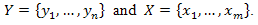
One sample is the experiment and the other is control. The aim is to check whether the experiment sample
is different from the control and what is the statistical significance of this difference.
As input we have two tables with names of genes as keys and rows
that contains expression values.
Note: The result will be calculated only for elements which are present
in both experiment and control tables!
For each element we independently test the null hypothesis and
calculate a score which accumulates all the information obtained for the element: The sign of score
indicates whether gene is found to be up- or down-regulated, its absolute value is equal to
log10(P-value) where the P-value is the probability of mistakenly consider the element as dysregulated
(a lower P-value (hence higher absolute score value) means a more reliable result).
Parameters:
- Experiment - experimental data for analysis.
- Table - a table data collection with experimental data stored in the BioUML repository.
- Columns - the columns from the table which are selected to be taken for the analysis.
- Control - control data for analysis.
- Table - a table data collection with control data stored in the BioUML repository.
- Columns - the columns from the table which are selected to be taken for the analysis.
- Statistical test - available statistical tests:
- Output type - the genes to be included in result:
- Up- and Down-regulated
- Up-regulated
- Down-regulated
- P-value threshold - threshold for P-value (only elements with a lower P-value will be included in the result).
- Outline boundaries - lower and upper boundaries for values the from input table. Outliers will be ignored.
-
Calculate FDR - the test method for calculation of False Discovery Rate (FDR) -
an average rate of mistakenly found up- or down-regulated genes under the given P-value threshold. It randomly permutates the data 50 times and applies the selected
up- down-identification procedure to each randomized table. FDR is calculated separately for up- and down-regulated
genes according to the formula:
-
Output table - the path in the BioUML repository where the result table will be stored.
If a table with the specified path already exists it will be replaced.
Student's test
This criterion is assigned to test mean values homogeneity (ax = ay)
of two normal-distributed samples with equal (but unknown) dispersion σ2.
(Note, that to apply this test both samples should have three or more values).
As a critical statistic in this method we use:
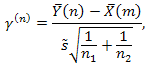
where:
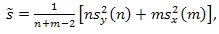
Corresponding sample means are:
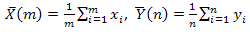
Corresponding sample dispersions are:
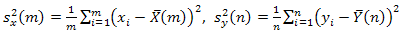
If the hypothesis H0 is true, this statistic should obey t-distribution with m+n-2
degrees of freedom.
Using double-sided criterion, we estimate P-value as:
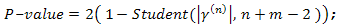
Wilcoxon test
Distribution independent rank criterion for testing the hypothesis that a certain treatment had no effect.
Let us denote:
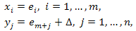
where xi and yj — appreciable values,
em+1,...,em+n —
unappreciable random values.
Parameter Δ is of interest to us, it is unknown shift resulting from some kind of treatment.
To use this method we must assume:
- all N random values e are mutually independent.
- all e are derived from common population.
The method tests the hypothesis H0: Δ=0. The algorithm is described below.
Join two samples into one and sort it in ascending order, assign to each value in joint sample its own rank.
Let Rj be the rank of the j-th element. As a critical statistic in this criterion we use:
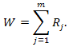
Suppose that we test our hypothesis facing the hypothesis H1: Δ≠0.
Evaluate all possible variants of rank grouping wherein statistic W is lesser
or equal to obervated one (denote it K), after which we calculate amount of all
possible distributions of ranks obtained by two samples, which is equal to CmN.
We estimate temporary P-value as:
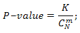
If our temporary P-value ≤ 0.5 we take as resulting P-value 2⋅(temporary P-value).
If temporary P-value > 0.5, then we evaluate all possible variants of rank grouping
wherein statistic W is greater or equal to obervated one (denote it L),
and take:
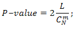
For next two methods we suppose that:
- All N observations X and Y are mutually independent.
- All X derived from the entire assembly Π1.
- All Y derived from the entire assembly Π2.
Lehmann-Rosenblatt test
The Lehmann-Rosenblatt test is an ω2-type distribution-independent criterion for homogeneity testing.
It tests the hypothesis that both populations Π1 and Π2 are identical, i.e. both samples
were derived from a single population.
It can be rewritten:
H0: F(x) = G(x) ∀x.
To test our hypothesis we:
-
Arrange our observations X and Y:
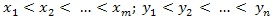
-
Evaluate criterion statistic:
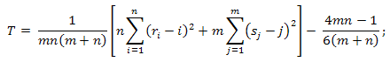
where ri—index number (rank) of
yi, sj—index number (rank) of xj
in the joint static series.
-
When m and n tend to ∞, the distribution of the statistic T under the condition that the H0
hypothesis is true, tends to an a1(t) distribution function:
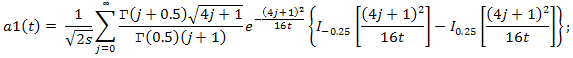
where:
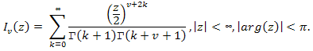
are modified Bessel functions.
-
And at last calculate P-value as:
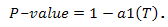
Kolmogorov-Smirnov test.
This is distribution-indepedent criterion for homogeneity testing.
It tests the hypothesis that both populations Π1 and Π2 are identical, i.e.
both samples were derived from a single population.
It can be rewritten:
H0: F(x) = G(x) ∀x.
To test our hypothesis we:
-
Arrange our observations X and Y:
x1 < x2 < … < xm;
y1 < y2 < … < yn.
-
Evaluate the Kolmogorov-Smirnov statistic, which measures the difference
between the empirical distribution functions, obtained with respect to
samples X and Y:
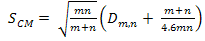
where Dm,n=max|Fn(x)−
G(x)m|
-
When m and n tend to ∞, the distribution of this statistic under the condition
that the H0 hypothesis is true tends to the Kolmogorov distribution function:
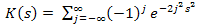
- So P-value = 1 − K(SCM).